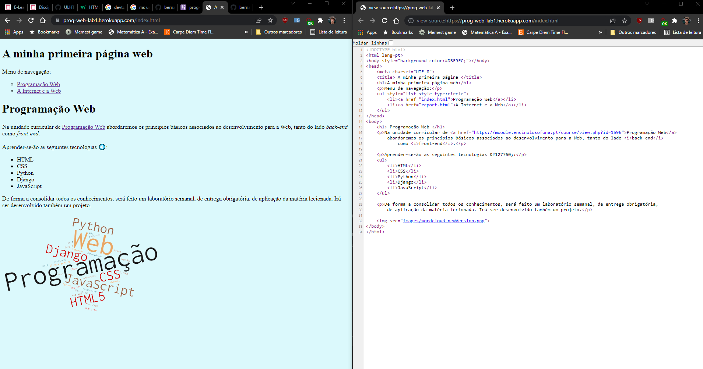
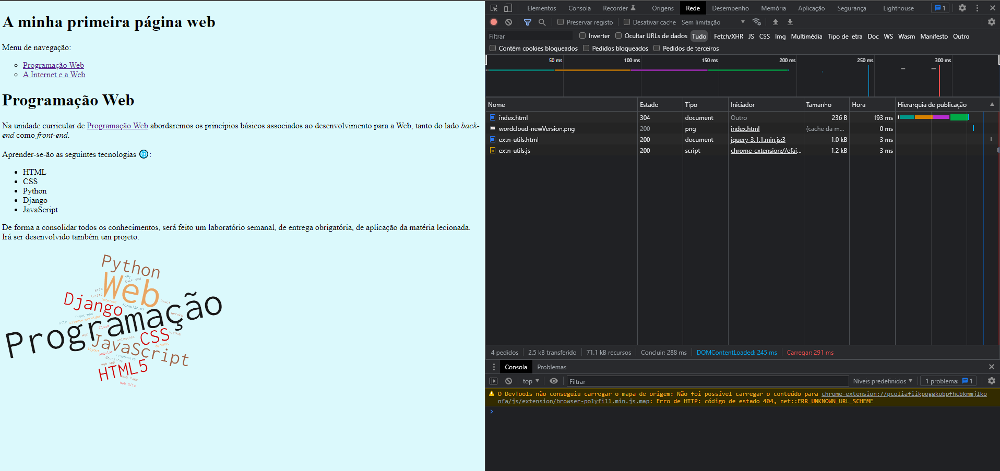

Menu de navegação:
Seguindo as diretrizes do terceiro ponto do enunciado do laboratório 1, utilizando a função do navegador "código-fonte", foi possivel aferir exatamente o que estava descrito no enunciado. Isto é, o código-fonte realizado ficou visível para consulta. Eis uma imagem da situação acima referida: 
Ao utilizar a função "rede" ou "network" das DevTools do Google Chrome temos uma panóplia de informações ao nosso dispor. Esta ferramenta é importante, pois permite:
Desta forma, podemos trabalhar no nosso código e fazer um benchmark constante do trabalho realizado, visto que todos os pedidos estão visíveis através desta ferramenta.
Ao clicar numa hiperligação os elementos descarregados são o código-fonte, quaisquer recursos utilizados nessa página, nomeadamente imagens (neste caso em particular), e extensões que servem de suporte ao ficheiro de código-fonte. Podemos observar isso através do inspect da primeira página criada neste laboratória, na seguinte imagem:  Respondendo então às questões colocadas:
O Header mostra o tipo de pedido executado, o seu estado, o endereço, etc. O Preview mostra uma pré-visualização do ficheiro em questão, ou seja, o que nós vemos na página web em si. A janela do timing permite dissecar o tempo gasto em cada fase do processo, desde que o pedido foi executado, até que foi recebido, o tempo que demorou na procura do DNS, etc
Este foi o meu report da minha primeira página web.